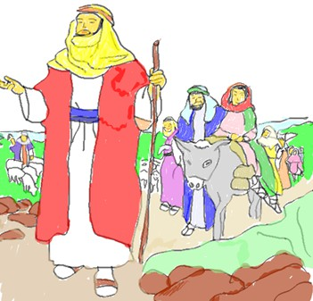
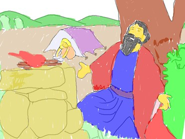
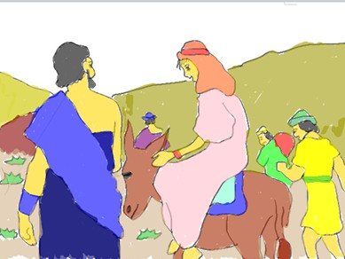
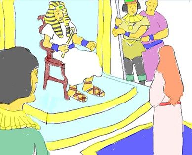
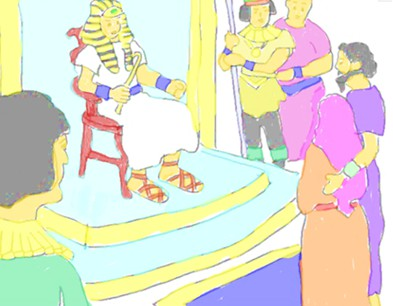
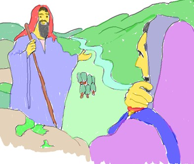
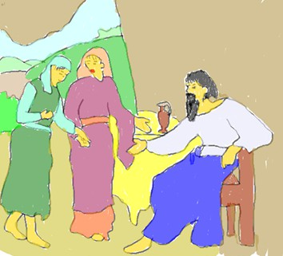
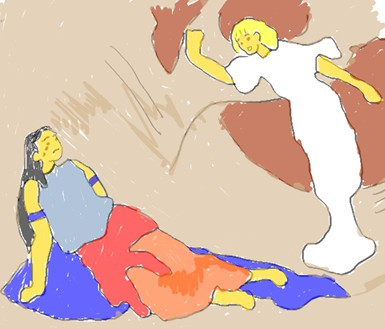

 當亞伯蘭七十五歲的時候, 神又再一次呼召亞伯蘭從哈蘭出來, 到祂指定的地方. 於是, 亞伯蘭帶著他的妻子撒萊和姪子羅得, 以及他們在哈蘭的 積蓄、人口、牲畜全都帶往迦南地去. 就在他們到了示劍的摩利橡樹那裡, 當時還是迦南人居住的地方, 神就應許亞伯蘭要將這地賜給他的後裔, 並且應許他的後裔將成為大民族, 而且這民族的禍福會關係其他的民族. 亞伯蘭就在那裏為神築了一座壇, 後來就往南遷了.
好景不常, 那地遇到大飢荒, 以致亞伯蘭被迫攜家帶眷下到埃及地去躲避這場飢荒.就在快到埃及邊界的地方, 亞伯蘭對妻子撒萊說, 我們以兄妹 相稱, 因為怕那地的人會為了撒萊的美貌而惹禍上身. 結果, 埃及人看到撒萊的外貌驚為天人, 立刻去告訴法老王. 法老王就叫人把撒萊帶進宮裡. 因為他倆以兄妹相稱, 所以法老就賞賜一大堆牲畜和僕婢給亞伯蘭, 作為把撒萊取去的報酬.  因為這樣錯誤的決定, 亞伯蘭啞巴吃黃蓮, 有苦說不出, 不知道要用甚麼身分替撒萊解圍, 就在這時候, 神出手了. 神降瘟疫在法老全家, 除了 撒萊之外, 無一倖免. 對於這莫名其妙的災害, 法老王只好尋求預言家找答案, 為什麼會有突然的災難臨到呢? 當法老知道實情後, 便找來 亞伯蘭, 說, 為什麼他要隱瞞撒萊是他妻子的關係呢?即便亞伯蘭辯解他與撒萊有同父異母的關係, 但他們畢竟是夫妻關係. 法老因亞伯拉罕的 神賜福亞伯蘭和亞伯蘭家裡的人, 以致亞伯蘭和羅得的產業太多, 常常發生衝突和紛爭. 亞伯蘭說自家人不可為此傷和氣, 於是羅得提議分地, 而他先選擇肥沃的所多瑪附近的約旦河平原, 而亞伯蘭繼續往迦南地去. 因為亞伯蘭的退讓, 神應許凡他所看到的地都要賜給他和他的後裔, 並且他的後裔會像地上塵土那麼多. 過了十年, 亞伯蘭已經八十多歲了, 但膝下仍無子, 如何實現神的應許呢? 於是, 撒萊提議將他從埃及帶來的使女夏甲納為妾, 使亞伯蘭可以因她得子. 亞伯蘭與夏甲同房, 就懷了孕. 這時候, 夏甲因有了亞伯蘭的孩子 就看自己與撒萊的地位同等, 不再尊重撒萊了. 撒萊就向亞伯蘭告狀, 並說夏甲敢如此待她, 是因為他的縱容. 亞伯蘭說夏甲本是她的使女, 並 認同夏甲是在撒萊的權下；因此撒萊就嚴厲的管轄夏甲, 以致令她因忍受不了而逃跑. 但在逃跑的路上, 她遇見了神, 神要她回撒萊那裡, 並順服她. 神也應許她要生一個兒子, 要給他取名為以實瑪利, 意思是神聽見了她的苦情, 將來他的後裔必成為龐大的民族. 後來, 夏甲在亞伯蘭八十六歲時, 果然替他生了一個兒子並取名為以實瑪利. 